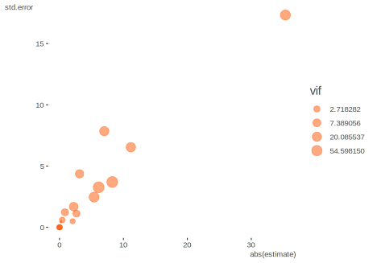

Lack of convergence got ya down? A plan of attack.
Prerequisite: Knowledge of regression modeling. Helpful would be to know something about mixed models and optimization.
Primary packages used:
It is not uncommon that complex models lead to difficulties with convergence. Though the following example is a demo with the R package lme4, most of it would potentially apply to any complex modeling situation where convergence problems arise. The goal is provide some steps one can take to get their models back on track. The running example is taken from the data posted at this stackoverflow question. Ben Bolker’s1 response there can be seen as the basis for this post, along with some extensions, updates and other organization.
You can download the data from here (RDS file), or go to the stackoverflow discussion and paste the code there. There isn’t any real explanation of the variables unfortunately, though you can get a sense of some of them (e.g. Day, replicate, temperature, etc.).
The following is the model that led to the stackoverflow post. It’s fairly complicated with multiple interactions and random effects, modeling the proportion of valid detections via a binomial model. The Unit effect is used to account for overdispersion, a common issue in count modeling.
model_mixed_0 = glmer(
cbind(ValidDetections, FalseDetections) ~
tm:Area + tm:c.distance + c.distance:Area + c.tm.depth:Area +
c.receiver.depth:Area + c.temp:Area + c.wind:Area + c.tm.depth +
c.receiver.depth + c.temp + c.wind + tm + c.distance + Area + replicate +
(1|SUR.ID) + (1|Day) + (1|Unit),
data = df,
family = binomial(link = logit)
)
Warning in checkConv(attr(opt, "derivs"), opt$par, ctrl = control$checkConv, : Model failed to converge with max|grad| =
0.131568 (tol = 0.002, component 1)Warning in checkConv(attr(opt, "derivs"), opt$par, ctrl = control$checkConv, : Model is nearly unidentifiable: very large eigenvalue
- Rescale variables?;Model is nearly unidentifiable: large eigenvalue ratio
- Rescale variables?This gives several warnings, the more egregious of which is that the model has not converged, meaning the estimates may not be trustworthy. So what do we do?
The first step is to step back and look at the data. Are there issues that can be spotted? Are some essentially collinear with others? In the following, we can see that some variables are only a few levels, and some, like Day, c.tm.depth and c.receiver.depth, are both notably correlated with each other and with other predictor variables.
$`Numeric Variables`
# A tibble: 9 x 10
Variable N Mean SD Min Q1 Median Q3 Max `% Missing`
<chr> <dbl> <dbl> <dbl> <dbl> <dbl> <dbl> <dbl> <dbl> <dbl>
1 ValidDetections 220 6.49 10.1 0 0 1 7 45 0
2 CountDetections 220 6.85 10.1 0 0 2 7 45 0
3 FalseDetections 220 0.36 0.73 0 0 0 0 4 0
4 R.det 220 0.52 0.47 0 0 0.68 1 1 0
5 c.receiver.depth 220 -0.06 0.31 -0.4 -0.34 -0.18 0.21 0.54 0
6 c.tm.depth 220 -0.01 0.48 -0.62 -0.55 0.03 0.4 0.78 0
7 c.temp 220 -0.46 2.38 -4.22 -3.62 0.54 1.55 2.84 0
8 c.wind 220 -0.26 3.29 -2.97 -2.97 -2.94 1.28 5.88 0
9 c.distance 220 -6.36 129. -160 -110 -10 90 190 0
$`Categorical Variables`
# A tibble: 14 x 4
Variable Group Frequency `%`
<chr> <fct> <int> <dbl>
1 SUR.ID 10185 74 34
2 SUR.ID 10186 74 34
3 SUR.ID 10250 72 33
4 tm CT 110 50
5 tm PT-04 110 50
6 replicate 1 120 55.
7 replicate 2 100 45
8 Area Drug Channel 120 55.
9 Area Finger 100 45
10 Day 03/06/13 60 27
11 Day 2/22/13 60 27
12 Day 2/27/13 60 27
13 Day 3/14/13 28 13
14 Day 2/26/13 12 5 We can obtain a rough metric of total correlation of a variable with the others by looking at the variance inflation factor (VIF)2. For this, we’ll treat any binary or ordered data as numeric, and we can use the car package to get the VIF. This requires running an arbitrary regression model that includes the covariates of interest, but the value is derived only from the predictor variables. If we just try it with a dummy model, we get an error, since the linear model has perfect collinearity. We find out that Day is probably causing issues, and we’ll see why later.
# the model used to acquire the vif doesn't matter- anything could be used for
# the target variable
# this produces errors about aliased coefficients
# car::vif(lm(CountDetections ~ . - Unit - FalseDetections - ValidDetections, dat = df))
attributes(alias(
lm(
CountDetections ~ . - Unit - FalseDetections - ValidDetections,
dat = df
)
)$Complete)$dimnames[[1]]
[1] "Day3/14/13" "c.wind" GVIF Df GVIF^(1/(2*Df))
SUR.ID 1.200902 2 1.046832
tm 1.066227 1 1.032583
ValidDetections 2.708644 1 1.645796
replicate 1.057540 1 1.028368
Area 5.795510 1 2.407387
R.det 2.393891 1 1.547220
c.receiver.depth 8.674740 1 2.945291
c.tm.depth 13.438407 1 3.665843
c.temp 2.956315 1 1.719394
c.wind 3.041363 1 1.743950
c.distance 2.065335 1 1.437127It looks like, along with Day, tm.depth is probably going to cause a problem, as more than 90% of its variance is accounted for by the other covariates. So at this point we can consider both it and Day as potential predictors to remove. Wind is less an issue once Day is removed.
An alternative approach I tried (not shown) was just running a PCA on the predictor variables. Only six components were needed to account for nearly almost 90% of the total variance, so I think it’s safe to say there is a notable amount of redundancy in this data.
One final note is that the target variable is a potential problem as well. More than half of the data is a 1.0 proportion of Valid Detections, and it also turns out this doesn’t appear to be proportional data per se, as sometimes both Valid and False Detections can be zero, meaning such observations don’t contribute meaningfully to the model. This isn’t necessarily a problem as these observations are basically dropped dropped from the model, and you will note in the GLM results that follow that the residual degrees of freedom will be notably lower than the total number of observations (220). This is due to the dropout of those observations, which is about 37% of the data. Even so, the lack of variability may be an underlying issue in general. Especially in the case of interactions, it is likely that some cells have no variability in the outcome.
So we know there are some data issues, so let’s start with a model that’s relatively simple but still plausible. If we just look at a GLM without any random effects, can we spot any issues?
model_glm_1 = glm(
cbind(ValidDetections, FalseDetections) ~
tm:Area + tm:c.distance + c.distance:Area + c.tm.depth:Area +
c.receiver.depth:Area + c.temp:Area + c.wind:Area + c.tm.depth +
c.receiver.depth + c.temp + c.wind + tm + c.distance + Area + replicate +
SUR.ID + Day,
data = df,
family = binomial(link = logit)
)
summary(model_glm_1)
Call:
glm(formula = cbind(ValidDetections, FalseDetections) ~ tm:Area +
tm:c.distance + c.distance:Area + c.tm.depth:Area + c.receiver.depth:Area +
c.temp:Area + c.wind:Area + c.tm.depth + c.receiver.depth +
c.temp + c.wind + tm + c.distance + Area + replicate + SUR.ID +
Day, family = binomial(link = logit), data = df)
Deviance Residuals:
Min 1Q Median 3Q Max
-2.739 0.000 0.000 0.539 2.161
Coefficients: (3 not defined because of singularities)
Estimate Std. Error z value Pr(>|z|)
(Intercept) -1.125e+01 6.504e+00 -1.730 0.08372 .
c.tm.depth -8.406e-01 1.228e+00 -0.684 0.49376
c.receiver.depth 7.026e+00 7.852e+00 0.895 0.37095
c.temp -5.514e+00 2.538e+00 -2.172 0.02983 *
c.wind -6.256e+00 3.349e+00 -1.868 0.06179 .
tmPT-04 -2.053e+00 4.961e-01 -4.139 3.5e-05 ***
c.distance -3.685e-03 2.614e-03 -1.410 0.15864
AreaFinger 5.901e+01 2.775e+01 2.127 0.03346 *
replicate2 2.700e+00 1.161e+00 2.326 0.02000 *
SUR.ID10186 -2.227e-01 4.456e-01 -0.500 0.61721
SUR.ID10250 -2.995e-01 4.469e-01 -0.670 0.50281
Day2/22/13 -7.114e+01 3.463e+01 -2.054 0.03996 *
Day2/26/13 3.306e+00 1.134e+03 0.003 0.99767
Day2/27/13 NA NA NA NA
Day3/14/13 NA NA NA NA
tmPT-04:AreaFinger 4.308e-01 6.066e-01 0.710 0.47759
tmPT-04:c.distance -5.332e-03 3.186e-03 -1.674 0.09419 .
AreaFinger:c.distance 1.192e-02 3.855e-03 3.091 0.00199 **
AreaFinger:c.tm.depth -2.815e+00 4.731e+00 -0.595 0.55189
AreaFinger:c.receiver.depth -3.211e+01 2.545e+01 -1.262 0.20708
AreaFinger:c.temp 2.377e+00 1.902e+00 1.250 0.21141
AreaFinger:c.wind NA NA NA NA
---
Signif. codes: 0 '***' 0.001 '**' 0.01 '*' 0.05 '.' 0.1 ' ' 1
(Dispersion parameter for binomial family taken to be 1)
Null deviance: 334.57 on 137 degrees of freedom
Residual deviance: 135.23 on 119 degrees of freedom
AIC: 253.65
Number of Fisher Scoring iterations: 17Sure enough, there are problems. What’s going on with Day and Area? One issue is that Area only couples with certain days, so having one already tells you a lot about what the other could tell you.
Area
Day Drug Channel Finger
03/06/13 60 0
2/22/13 0 60
2/26/13 0 12
2/27/13 60 0
3/14/13 0 28You could potentially create a combined type of variable to deal with this for example, but otherwise the problem will persist with both in the model. There are likely remaining collinearities besides, but let’s take Day out for example.
Call:
glm(formula = cbind(ValidDetections, FalseDetections) ~ c.tm.depth +
c.receiver.depth + c.temp + c.wind + tm + c.distance + Area +
replicate + SUR.ID + tm:Area + tm:c.distance + Area:c.distance +
Area:c.tm.depth + Area:c.receiver.depth + Area:c.temp + Area:c.wind,
family = binomial(link = logit), data = df)
Deviance Residuals:
Min 1Q Median 3Q Max
-2.7693 0.0000 0.0000 0.5335 2.1586
Coefficients:
Estimate Std. Error z value Pr(>|z|)
(Intercept) -10.980797 6.323591 -1.736 0.08248 .
c.tm.depth -0.842695 1.227579 -0.686 0.49242
c.receiver.depth 7.003401 7.846631 0.893 0.37211
c.temp -5.407822 2.465579 -2.193 0.02828 *
c.wind -6.125119 3.266203 -1.875 0.06075 .
tmPT-04 -2.049088 0.495012 -4.139 3.48e-05 ***
c.distance -0.003755 0.002586 -1.452 0.14644
AreaFinger 11.163412 6.537806 1.708 0.08773 .
replicate2 2.646675 1.120176 2.363 0.01814 *
SUR.ID10186 -0.223527 0.445491 -0.502 0.61584
SUR.ID10250 -0.300337 0.446936 -0.672 0.50159
tmPT-04:AreaFinger 0.425446 0.605567 0.703 0.48233
tmPT-04:c.distance -0.005304 0.003175 -1.670 0.09483 .
c.distance:AreaFinger 0.011937 0.003849 3.101 0.00193 **
c.tm.depth:AreaFinger -3.137815 4.366782 -0.719 0.47241
c.receiver.depth:AreaFinger -35.342161 17.332674 -2.039 0.04145 *
c.temp:AreaFinger 2.222685 1.682491 1.321 0.18648
c.wind:AreaFinger 8.259864 3.700848 2.232 0.02562 *
---
Signif. codes: 0 '***' 0.001 '**' 0.01 '*' 0.05 '.' 0.1 ' ' 1
(Dispersion parameter for binomial family taken to be 1)
Null deviance: 334.57 on 137 degrees of freedom
Residual deviance: 135.27 on 120 degrees of freedom
AIC: 251.69
Number of Fisher Scoring iterations: 10Well, at least we got rid of the complete collinearity- no NA remains. However, those familiar with such models can still see that some of these coefficients and their associated standard errors are exceedingly large for this setting, so we shouldn’t really be surprised there would still be issues with the more complicated mixed models. With binary logistic models, large absolute coefficients and their standard errors are usually a sign of collinearity/separation, and we now know from our previous exploration that something similar is going on in this proportional binomial model. Here is a table of the more egregious offenders and a plot of all coefficients, their standard errors, and the VIF (size).
| term | estimate | std.error | statistic | p.value | vif |
|---|---|---|---|---|---|
| c.receiver.depth | 7.003 | 7.847 | 0.893 | 0.372 | 21.202 |
| c.wind | -6.125 | 3.266 | -1.875 | 0.061 | 88.124 |
| AreaFinger | 11.163 | 6.538 | 1.708 | 0.088 | 24.372 |
| c.receiver.depth:AreaFinger | -35.342 | 17.333 | -2.039 | 0.041 | 43.537 |
| c.wind:AreaFinger | 8.260 | 3.701 | 2.232 | 0.026 | 89.504 |

At this point I would not assume anything about the mixed model itself being a problem, and be leaning toward this being primarily a data issue. Or, at the very least, data issues will need to be sorted out. So let’s begin the restart of our mixed model effort by pulling out some of those variables we thought had some collinearity issues. You might have noticed from the GLM that SUR.ID was only 3 levels, so let’s move that to a fixed effect also. In keeping things simple, I’m not including any interactions.
model_mixed_1 = glmer(
cbind(ValidDetections, FalseDetections) ~
# tm:Area + tm:c.distance + c.distance:Area + #c.tm.depth:Area +
# c.receiver.depth:Area + c.temp:Area + c.wind:Area + #c.tm.depth +
c.receiver.depth + c.temp + c.wind + tm + c.distance + Area + replicate +
SUR.ID +
(1|Unit), # + (1|Day)
data = df,
family = binomial(link = logit)
)
Warning in checkConv(attr(opt, "derivs"), opt$par, ctrl = control$checkConv, : Model failed to converge with max|grad| =
0.117672 (tol = 0.002, component 1)summarize_model(model_mixed_1, ci = FALSE)
Variance Components: Group Effect Variance SD Var_prop
Unit Intercept 0.90 0.95 1.00
Fixed Effects: Term Value SE Z P_value Lower_2.5 Upper_97.5
Intercept 2.39 0.73 3.26 0.00 0.95 3.82
c.receiver.depth -3.80 1.08 -3.53 0.00 -5.91 -1.69
c.temp 0.25 0.19 1.28 0.20 -0.13 0.63
c.wind 0.13 0.15 0.88 0.38 -0.16 0.43
tmPT-04 -1.36 0.36 -3.77 0.00 -2.07 -0.65
c.distance -0.01 0.00 -5.09 0.00 -0.01 -0.01
AreaFinger 1.22 0.62 1.99 0.05 0.02 2.43
replicate2 -0.39 0.37 -1.05 0.29 -1.11 0.33
SUR.ID10186 -0.13 0.55 -0.23 0.82 -1.20 0.95
SUR.ID10250 -0.20 0.54 -0.36 0.72 -1.26 0.87Well, we still have issues, so what else can we try?
Let’s go ahead with the easy part and rescale our variables, which might as well be done with any model. I will standardize the numeric variables.
sc = function(x) scale(x)[, 1]
df = df %>%
mutate(
c.receiver.depth_sc = sc(c.receiver.depth),
c.tm.depth_sc = sc(c.tm.depth),
c.temp_sc = sc(c.temp),
c.wind_sc = sc(c.wind),
c.distance_sc = sc(c.distance),
)
model_mixed_2 = glmer(
cbind(ValidDetections, FalseDetections) ~
# tm:Area + tm:c.distance_sc + c.distance_sc:Area +
# c.receiver.depth_sc:Area + c.temp_sc:Area + c.wind_sc:Area +
c.receiver.depth_sc + c.temp_sc + c.wind_sc + tm + c.distance_sc + Area + replicate +
SUR.ID +
(1|Unit),
data = df,
family = binomial(link = logit)
)
Warning in checkConv(attr(opt, "derivs"), opt$par, ctrl = control$checkConv, : Model failed to converge with max|grad| =
0.135829 (tol = 0.002, component 1)summarize_model(model_mixed_2, ci = FALSE)
Variance Components: Group Effect Variance SD Var_prop
Unit Intercept 0.87 0.93 1.00
Fixed Effects: Term Value SE Z P_value Lower_2.5 Upper_97.5
Intercept 2.48 0.69 3.59 0.00 1.13 3.84
c.receiver.depth_sc -1.18 0.33 -3.56 0.00 -1.83 -0.53
c.temp_sc 0.58 0.45 1.27 0.20 -0.31 1.47
c.wind_sc 0.42 0.49 0.86 0.39 -0.54 1.38
tmPT-04 -1.36 0.36 -3.78 0.00 -2.07 -0.66
c.distance_sc -1.19 0.23 -5.15 0.00 -1.64 -0.74
AreaFinger 1.23 0.61 2.01 0.04 0.03 2.43
replicate2 -0.39 0.37 -1.07 0.28 -1.11 0.33
SUR.ID10186 -0.11 0.54 -0.20 0.84 -1.17 0.95
SUR.ID10250 -0.19 0.54 -0.35 0.73 -1.25 0.87So at least we have the rescaling taken care of, and while that got rid of one warning, we still have the convergence problem. What can we check for next? I looked to see if there was any further imbalance of categorical variables, didn’t spot much issue, but then discovered something else. A couple covariates - c.wind and c.distance - have only five unique values, and for the former, some of those values only occur a few times. In addition, c.wind was unique per day, so was essentially confounded with it. So we can feel fine with having previously removed Day.
df %>%
select(-ends_with('sc')) %>%
map_int(n_distinct)
SUR.ID tm ValidDetections CountDetections FalseDetections replicate Area
3 2 35 35 5 2 2
Day R.det c.receiver.depth c.tm.depth c.temp c.wind c.distance
5 21 30 31 37 5 5
Unit
220 table(df$c.wind, df$Day)
03/06/13 2/22/13 2/26/13 2/27/13 3/14/13
-2.96855001 0 60 0 0 0
-2.939182972 0 0 0 60 0
1.27535159 60 0 0 0 0
4.71144999 0 0 12 0 0
5.88092439 0 0 0 0 28If we treat these as categorical what happens? I’ll do it just for the GLM again.
model_glm_3 = glm(
cbind(ValidDetections, FalseDetections) ~
# tm:Area + tm:c.distance_sc + c.distance_sc:Area +
# c.receiver.depth_sc:Area + c.temp_sc:Area + c.wind_sc:Area +
c.receiver.depth_sc + c.temp_sc + factor(c.wind) + tm + factor(c.distance) + Area + replicate +
SUR.ID ,
data = df,
family = binomial(link = logit)
)
summary(model_glm_3)
Call:
glm(formula = cbind(ValidDetections, FalseDetections) ~ c.receiver.depth_sc +
c.temp_sc + factor(c.wind) + tm + factor(c.distance) + Area +
replicate + SUR.ID, family = binomial(link = logit), data = df)
Deviance Residuals:
Min 1Q Median 3Q Max
-3.4641 0.0000 0.0000 0.5706 2.1259
Coefficients: (1 not defined because of singularities)
Estimate Std. Error z value Pr(>|z|)
(Intercept) 7.8190 2.2057 3.545 0.000393 ***
c.receiver.depth_sc 1.3883 2.1912 0.634 0.526349
c.temp_sc -2.3820 1.4315 -1.664 0.096116 .
factor(c.wind)-2.939182972 -5.0028 4.0691 -1.229 0.218901
factor(c.wind)1.27535159 -7.8429 2.9788 -2.633 0.008466 **
factor(c.wind)4.71144999 17.9094 1180.6959 0.015 0.987898
factor(c.wind)5.88092439 -9.1668 6.3781 -1.437 0.150654
tmPT-04 -1.2459 0.2823 -4.413 1.02e-05 ***
factor(c.distance)-110 -0.3953 0.3908 -1.011 0.311786
factor(c.distance)-10 -0.9887 0.4110 -2.405 0.016162 *
factor(c.distance)90 -0.8547 0.5253 -1.627 0.103694
factor(c.distance)190 -3.2681 0.7664 -4.264 2.01e-05 ***
AreaFinger NA NA NA NA
replicate2 0.7647 0.5249 1.457 0.145120
SUR.ID10186 -0.1224 0.4384 -0.279 0.780057
SUR.ID10250 -0.2700 0.4363 -0.619 0.536010
---
Signif. codes: 0 '***' 0.001 '**' 0.01 '*' 0.05 '.' 0.1 ' ' 1
(Dispersion parameter for binomial family taken to be 1)
Null deviance: 334.57 on 137 degrees of freedom
Residual deviance: 146.17 on 123 degrees of freedom
AIC: 256.59
Number of Fisher Scoring iterations: 17Ah! So now we see that Area is also accounted for by other factors. In addition, wind is still problematic. Let’s take out Area, while still treating wind and distance as categorical for our diagnostic adventure.
Call:
glm(formula = cbind(ValidDetections, FalseDetections) ~ c.receiver.depth_sc +
c.temp_sc + factor(c.wind) + tm + factor(c.distance) + replicate +
SUR.ID, family = binomial(link = logit), data = df)
Deviance Residuals:
Min 1Q Median 3Q Max
-3.4641 0.0000 0.0000 0.5706 2.1259
Coefficients:
Estimate Std. Error z value Pr(>|z|)
(Intercept) 7.8190 2.2057 3.545 0.000393 ***
c.receiver.depth_sc 1.3883 2.1912 0.634 0.526349
c.temp_sc -2.3820 1.4315 -1.664 0.096116 .
factor(c.wind)-2.939182972 -5.0028 4.0691 -1.229 0.218901
factor(c.wind)1.27535159 -7.8429 2.9788 -2.633 0.008466 **
factor(c.wind)4.71144999 17.9094 1180.6959 0.015 0.987898
factor(c.wind)5.88092439 -9.1668 6.3781 -1.437 0.150654
tmPT-04 -1.2459 0.2823 -4.413 1.02e-05 ***
factor(c.distance)-110 -0.3953 0.3908 -1.011 0.311786
factor(c.distance)-10 -0.9887 0.4110 -2.405 0.016162 *
factor(c.distance)90 -0.8547 0.5253 -1.627 0.103694
factor(c.distance)190 -3.2681 0.7664 -4.264 2.01e-05 ***
replicate2 0.7647 0.5249 1.457 0.145120
SUR.ID10186 -0.1224 0.4384 -0.279 0.780057
SUR.ID10250 -0.2700 0.4363 -0.619 0.536010
---
Signif. codes: 0 '***' 0.001 '**' 0.01 '*' 0.05 '.' 0.1 ' ' 1
(Dispersion parameter for binomial family taken to be 1)
Null deviance: 334.57 on 137 degrees of freedom
Residual deviance: 146.17 on 123 degrees of freedom
AIC: 256.59
Number of Fisher Scoring iterations: 17The remaining collinearity is due to the relatively few observations for that value of wind, but at least most of the other covariates effects have settled down. Let’s try collapsing wind values and officially making it categorical.
-2.96855001 -2.939182972 1.27535159 Higher
60 60 60 40 model_mixed_3 = glmer(
cbind(ValidDetections, FalseDetections) ~
# tm:Area + tm:c.distance_sc + c.distance_sc:Area +
# c.receiver.depth_sc:Area + c.temp_sc:Area + c.wind_sc:Area +
c.receiver.depth_sc + c.temp_sc + wind + tm + factor(c.distance) + #Area +
replicate + SUR.ID +
(1|Unit),
data = df,
family = binomial(link = logit)
)
summarize_model(model_mixed_3, ci = FALSE)
Group Effect Variance SD Var_prop
Unit Intercept 0.78 0.88 1.00
Term Value SE Z P_value Lower_2.5 Upper_97.5
Intercept 3.67 1.16 3.16 0.00 1.40 5.94
c.receiver.depth_sc -3.02 1.40 -2.16 0.03 -5.76 -0.28
c.temp_sc -1.72 1.70 -1.02 0.31 -5.05 1.60
wind-2.939182972 2.73 2.87 0.95 0.34 -2.89 8.35
wind1.27535159 -4.20 2.88 -1.46 0.14 -9.85 1.44
windHigher 4.41 2.81 1.57 0.12 -1.10 9.92
tmPT-04 -1.31 0.36 -3.65 0.00 -2.01 -0.60
factorc.distance-110 -0.62 0.48 -1.31 0.19 -1.56 0.31
factorc.distance-10 -1.44 0.50 -2.87 0.00 -2.42 -0.45
factorc.distance90 -1.23 0.62 -1.97 0.05 -2.44 -0.01
factorc.distance190 -4.21 0.96 -4.39 0.00 -6.09 -2.33
replicate2 0.20 0.58 0.34 0.73 -0.93 1.33
SUR.ID10186 -0.06 0.54 -0.12 0.90 -1.12 0.99
SUR.ID10250 -0.16 0.54 -0.30 0.76 -1.21 0.89Checking VIF adjusted for the degrees of freedom associated with the covariate (which is greater for categorical variables), we still have some issues. Below I show VIF both with and without wind as an example.
| covariate | VIF_adj_orig | VIF_adj |
|---|---|---|
| c.receiver.depth_sc | 10.017 | 1.277 |
| c.temp_sc | 9.437 | 1.065 |
| wind | 3.914 | NA |
| tm | 1.059 | 1.047 |
| factor(c.distance) | 1.080 | 1.062 |
| replicate | 1.769 | 1.101 |
| SUR.ID | 1.075 | 1.029 |
Let’s see what happens if we remove wind from the model.
model_mixed_4 = glmer(
cbind(ValidDetections, FalseDetections) ~
# tm:Area + tm:c.distance_sc + c.distance_sc:Area +
# c.receiver.depth_sc:Area + c.temp_sc:Area + c.wind_sc:Area +
c.receiver.depth_sc + c.temp_sc + tm + factor(c.distance) + #Area +
replicate + SUR.ID +
(1|Unit),
data = df,
family = binomial(link = logit)
)
Warning in checkConv(attr(opt, "derivs"), opt$par, ctrl = control$checkConv, : Model failed to converge with max|grad| =
0.0547464 (tol = 0.002, component 1)summarize_model(model_mixed_4, ci = FALSE)
Group Effect Variance SD Var_prop
Unit Intercept 1.45 1.20 1.00
Term Value SE Z P_value Lower_2.5 Upper_97.5
Intercept 5.62 0.74 7.63 0.00 4.18 7.06
c.receiver.depth_sc -1.08 0.19 -5.57 0.00 -1.46 -0.70
c.temp_sc 0.50 0.21 2.34 0.02 0.08 0.92
tmPT-04 -1.28 0.40 -3.19 0.00 -2.08 -0.49
factorc.distance-110 -0.99 0.53 -1.86 0.06 -2.04 0.05
factorc.distance-10 -1.87 0.55 -3.41 0.00 -2.95 -0.80
factorc.distance90 -1.87 0.66 -2.83 0.00 -3.17 -0.58
factorc.distance190 -5.60 1.04 -5.38 0.00 -7.65 -3.56
replicate2 -0.37 0.40 -0.94 0.35 -1.15 0.40
SUR.ID10186 -0.90 0.56 -1.60 0.11 -1.99 0.20
SUR.ID10250 -0.98 0.56 -1.74 0.08 -2.07 0.12We’re doing better, as our max|grad| value is closer to the tolerance value, but we’re still not where we want to be. What else can we do?
If any variance components estimates are zero we could remove them. However, at this point we already have. Day was zero because it was already accounted for by other covariates. SUR.ID moved to a fixed effect, where it still appears to be a small effect, but at least won’t cause computational problems. The remaining Unit effect does appear to capture some overdispersion, so we can leave it for now.
At this point, we have explored some of the more problematic aspects of the data. Some might feel that they are missing out on some of their theoretical priorities by removing some covariates, but if they are confounded with other covariates, their story can’t be easily disentangled anyway. As noted, we could still play around with creation of different categorical effects through further collapsing or combining, but a lot of that would be arbitrary, so must be done with caution.
In general, the problems with the model appear to actually be entirely with the data, but we can move on for demonstration. At some point in your own modeling adventure, you may exhaust what you can do data-wise, and still have convergence issues. This leaves exploration of the more technical side of things to see what tweaks can be made to help further. In order to best check these more technical aspects, it helps to know something about the underlying optimization algorithms, or at least optimization in general. And in general, I suggest refraining from this unless the previous steps have failed. It is very common that once the data has been sorted, convergence gets solved as well, so the data must be ruled out. In any case, let’s see what else we can do!
This is a mixed model-specific check3, and in general, checking singularity4 goes along with removing zero random effects. These days, you’ll usually get a singularity warning when it is likely the case. In the past, Bolker suggested checking this problem as follows, but for this example concluded the result wasn’t close enough to zero to be a real concern. The theta below are just our random effect standard deviations, and I would say that the ones besides Unit probably weren’t meaningfully different from zero.
thetas = getME(model_mixed_0, "theta")
thetas
Unit.(Intercept) Day.(Intercept) SUR.ID.(Intercept)
0.680682401 0.009520505 0.007124172 ll = getME(model_mixed_0, "lower") # lower bounds on model parameters (random effects parameters only)
min(thetas[ll == 0])
[1] 0.007124172Nowadays lme4 provides the function isSingular which uses the steps above to check the minimum value against some specified tolerance.
isSingular(model_mixed_0, tol = 1e-5)
[1] FALSE# rePCA(model_mixed_0) # via PCA of the random-effects variance-covariance estimates
For the mixed model setting, Bolker notes the following:
One general problem is that large scaled gradients are often associated with small absolute gradients: we might decide that we’re more interested in testing the (parallel) minimum of these two quantities.
We can do this as follows for the initial mixed model.
derivs_init = model_mixed_0@optinfo$derivs
sc_grad_init = with(derivs_init, solve(Hessian, gradient))
max(abs(sc_grad_init))
[1] 1.518823[1] 0.1315685We see that the unscaled gradient results in a lower maximum value, but is still large relative to the tolerance. That value is what is reported in the warning message.
model_mixed_0@optinfo$conv$lme4$messages[[1]]
[1] "Model failed to converge with max|grad| = 0.131568 (tol = 0.002, component 1)"It may be instructive to compare the result to the model where we scaled the inputs. In this case the scaled gradient results in the lower max value.
derivs_model_mixed_2 = model_mixed_2@optinfo$derivs
sc_grad_model_mixed_2 = with(derivs_model_mixed_2, solve(Hessian, gradient))
max(abs(sc_grad_model_mixed_2))
[1] 0.01645039[1] 0.01645039Bolker also suggests checking if the result varies from using a different calculation, but it’s not clear what we’d do if this was the case. In any event, the results would be similar.
devfun_init = update(model_mixed_0, devFunOnly = TRUE)
pars_init = unlist(getME(model_mixed_0, c("theta", "fixef")))
grad_init = numDeriv::grad(devfun_init, pars_init)
hess_init = numDeriv::hessian(devfun_init, pars_init)
sc_grad_init = solve(hess_init, grad_init)
max(pmin(abs(sc_grad_init), abs(grad_init)))
[1] 0.1315678[1] 0.1315685As another step along our technical travails, we can just let the optimizer keep going until it does converge. Many R modeling packages allow for you to access the optimizer and change various settings. Most optimizers have a maxit type of argument to let you set the number of iterations, and we can use update to continue where we left off. Unfortunately there is no standard argument name for the total number of iterations, or even if you do happen to remember, guessing is required as to what we should set it at. So instead, we can just call update iteratively until there is no convergence warning. I check this by seeing if there is any output to @optinfo$conv$lme4, as it will only be there if it doesn’t converge5.
model_mixed_5 = model_mixed_4
while (length(model_mixed_5@optinfo$conv$lme4) > 0) {
pars = getME(model_mixed_5,c("theta","fixef"))
model_mixed_5 <-
update(model_mixed_5,
start = pars,
control = glmerControl(optCtrl = list(maxfun = 2e5)))
}
max(
abs(
with(
model_mixed_5@optinfo$derivs, solve(Hessian, gradient)
)
)
)
[1] 0.0008423291# we win!
So at this point we have converged with no warnings. Hooray for us! However, the following shows us that we were pretty close anyway. The estimates from the last model with warnings and the converged model are nearly identical.
summarize_model(model_mixed_4, ci = 0)
Variance Components: Group Effect Variance SD Var_prop
Unit Intercept 1.45 1.20 1.00
Fixed Effects: Term Value SE Z P_value Lower_2.5 Upper_97.5
Intercept 5.62 0.74 7.63 0.00 4.18 7.06
c.receiver.depth_sc -1.08 0.19 -5.57 0.00 -1.46 -0.70
c.temp_sc 0.50 0.21 2.34 0.02 0.08 0.92
tmPT-04 -1.28 0.40 -3.19 0.00 -2.08 -0.49
factorc.distance-110 -0.99 0.53 -1.86 0.06 -2.04 0.05
factorc.distance-10 -1.87 0.55 -3.41 0.00 -2.95 -0.80
factorc.distance90 -1.87 0.66 -2.83 0.00 -3.17 -0.58
factorc.distance190 -5.60 1.04 -5.38 0.00 -7.65 -3.56
replicate2 -0.37 0.40 -0.94 0.35 -1.15 0.40
SUR.ID10186 -0.90 0.56 -1.60 0.11 -1.99 0.20
SUR.ID10250 -0.98 0.56 -1.74 0.08 -2.07 0.12summarize_model(model_mixed_5, ci = 0)
Variance Components: Group Effect Variance SD Var_prop
Unit Intercept 1.46 1.21 1.00
Fixed Effects: Term Value SE Z P_value Lower_2.5 Upper_97.5
Intercept 5.63 0.74 7.62 0.00 4.18 7.08
c.receiver.depth_sc -1.07 0.19 -5.54 0.00 -1.45 -0.69
c.temp_sc 0.50 0.22 2.34 0.02 0.08 0.92
tmPT-04 -1.28 0.40 -3.18 0.00 -2.08 -0.49
factorc.distance-110 -0.99 0.53 -1.85 0.06 -2.04 0.06
factorc.distance-10 -1.87 0.55 -3.39 0.00 -2.95 -0.79
factorc.distance90 -1.87 0.66 -2.82 0.00 -3.17 -0.57
factorc.distance190 -5.59 1.04 -5.37 0.00 -7.63 -3.55
replicate2 -0.38 0.40 -0.96 0.34 -1.15 0.40
SUR.ID10186 -0.91 0.56 -1.61 0.11 -2.01 0.20
SUR.ID10250 -0.99 0.56 -1.76 0.08 -2.09 0.11As an additional point, one may provide starting estimates from the outset. For example you could run a a simpler model, e.g. standard GLM, and feed the estimates there for the fixed effects coefficients of the mixed model, or even run a model to obtain starting values for the random effects (see this example).
As a last effort among the more technical knobs to turn, we can start fiddling with the optimizer options. The lme4 package has a nice function allFit that will search across several different optimizers (some may require additional packages to be installed). However, in any particular modeling setting you could potentially do this, though often you may not be able to without quite a bit of effort relative to what lme4 allows. I’ll do this with our last non-converged model.
bobyqa : [OK]
Nelder_Mead : [OK]
nlminbwrap : [OK]
nmkbw : [OK]
optimx.L-BFGS-B : [OK]
nloptwrap.NLOPT_LN_NELDERMEAD : [OK]
nloptwrap.NLOPT_LN_BOBYQA : [OK]glmm_all_summary = summary(glmm_all)
The ‘[OK]’ just means there wasn’t an error, however we can see that several have convergence problems, but even a couple of those are almost to the tolerance level. In the end though, the estimates and log likelihoods are not meaningfully different across the optimizers.
| opt | OK | Message |
|---|---|---|
| Nelder_Mead | TRUE | Model failed to converge with max|grad| = 0.0062003 (tol = 0.002, component 1) |
| optimizer | (Intercept) | c.receiver.depth_sc | c.temp_sc | tmPT-04 | factor(c.distance)-110 | factor(c.distance)-10 | factor(c.distance)90 | factor(c.distance)190 | replicate2 | SUR.ID10186 | SUR.ID10250 | ll |
|---|---|---|---|---|---|---|---|---|---|---|---|---|
| bobyqa | 5.633 | -1.072 | 0.503 | -1.284 | -0.987 | -1.867 | -1.867 | -5.591 | -0.379 | -0.905 | -0.989 | -121.842 |
| Nelder_Mead | 5.632 | -1.073 | 0.503 | -1.284 | -0.986 | -1.866 | -1.867 | -5.590 | -0.378 | -0.906 | -0.989 | -121.842 |
| nlminbwrap | 5.633 | -1.072 | 0.503 | -1.284 | -0.987 | -1.867 | -1.867 | -5.591 | -0.379 | -0.905 | -0.989 | -121.842 |
| nmkbw | 5.633 | -1.072 | 0.503 | -1.284 | -0.987 | -1.867 | -1.867 | -5.591 | -0.379 | -0.905 | -0.989 | -121.842 |
| optimx.L-BFGS-B | 5.632 | -1.072 | 0.503 | -1.284 | -0.987 | -1.867 | -1.867 | -5.591 | -0.379 | -0.905 | -0.989 | -121.842 |
| nloptwrap.NLOPT_LN_NELDERMEAD | 5.633 | -1.072 | 0.503 | -1.284 | -0.987 | -1.867 | -1.867 | -5.591 | -0.379 | -0.905 | -0.989 | -121.842 |
| nloptwrap.NLOPT_LN_BOBYQA | 5.633 | -1.072 | 0.503 | -1.284 | -0.987 | -1.867 | -1.867 | -5.591 | -0.379 | -0.906 | -0.990 | -121.842 |
The conclusion would be that our estimates are probably okay regardless of chosen optimizer, but the data likely has issues that still need to be overcome.
Along with different optimizers comes trying different packages. Some packages, in this case like glmmTMB or brms, would be viable options. In my playing around with those, glmmTMB converged, but obviously doesn’t magically overcome the collinearity problems. Likewise, brms appeared to converge, but had other estimation issues specific to it. Unlike the others, brms also noted that the zero count observations could not be used.
The final step would be to make some hard decisions about the model. Which predictors are most meaningful? Is this the best target variable available? Is this the right way to think about the distribution of the target? Is the research question clear enough? Is it strongly related to the available data, enough to be answerable?6
However, these are more theoretical problems, not so much statistical ones, and there may be no right answer in the end. That is perfectly fine, and just what you’d report to others. The following model has no issues, but may leave more questions than answers.
model_mixed_final = glmer(
ValidDetections ~
c.receiver.depth_sc + c.temp_sc + tm +
replicate + SUR.ID + (1|Unit),
data = df,
family = poisson
)
summarize_model(model_mixed_final, ci = 0)
Variance Components: Group Effect Variance SD Var_prop
Unit Intercept 2.96 1.72 1.00
Fixed Effects: Term Value SE Z P_value Lower_2.5 Upper_97.5
Intercept -0.01 0.33 -0.02 0.98 -0.66 0.64
c.receiver.depth_sc -0.86 0.14 -6.16 0.00 -1.13 -0.59
c.temp_sc 0.60 0.14 4.27 0.00 0.33 0.88
tmPT-04 -0.62 0.27 -2.27 0.02 -1.16 -0.08
replicate2 -0.11 0.27 -0.41 0.68 -0.65 0.42
SUR.ID10186 0.92 0.35 2.67 0.01 0.25 1.60
SUR.ID10250 1.11 0.35 3.18 0.00 0.42 1.79We can summarize our approach to convergence problems as follows:
Step back and look at your data. Are there issues? Are some variables essentially collinear with others or otherwise can be practically reduced?
Start with the simplest but still plausible model. Do you spot any additional issues? If there are, these probably need to be remedied before moving to more complex models.
Scale your continuous variables. You should be doing this anyway. If some categorical levels have very relatively few observations, consider collapsing.
For mixed models, if some of your random effects only have a few levels, treat them as fixed or see if they are even needed in the model.
For mixed models, are any random effect variance estimates zero or nearly zero? Remove.
After some initial technical checks, if possible, restart the model using previous starting values, and run until convergence. Many packages provide some functionality in this regard, but what exactly is provided may be limited.
Change the optimizer (if a small mixed model using lme4, compare several with allFit function).
Use a different package. The different estimation approach may simply work better for the current problem or provide other opportunities for tweaks. For example, with mixed models one could use glmmTMB or brms (Bayesian) in lieu of lme4.
In my experience with many clients with many types of data coming across many fields of study, the usual problem with convergence and lme4 (and others) is typically a fixable data problem, or a problematically specified model. In this case, the lme4 developers have worked hard over a number of years to build this awesome tool, and it works very well, so if it is having problems, you should be inspecting your data closely and thinking hard about your model. If it is an lme4 problem, switching optimizers will likely get you to convergence, but going through technical solutions should be a last resort.
Bates et al.(Bates et al. 2015)
Stackoverflow question(StackOverflow 2014)
Bolker’s answer given a little more cleanly(Bolker 2014?)
Help file for convergence(Bolker 2020)
Ben Bolker is one of the primary developers of the lme4 package.↩︎
For a basic linear model situation, \(1-1/VIF = R^2\), where \(R^2\) is a regression model where a covariate is predicted by all the other covariates. We wouldn’t typically use a standard linear regression for binary outcomes or other scenarios, but this provides a quick and rough metric. The car package actually also provides a ‘generalized’ VIF though. In terms of interpretation, it tells us how much the standard error increases relative to the covariate if it was independent of the others. We would be concerned with redundancy of anything of VIF > 10 / \(R^2\) > .90, but maybe even less. As a final note, collinearity is basically a sample size issue, as larger data would reduce the standard errors, and we’d likely get a fuller sense of true variability in the covariates.↩︎
This outline mostly follows the documentation in the help file for ?convergence for lme4.↩︎
Think of doing a principal components analysis on the variance-covariance matrix for the random effects. If one of those components is essentially accounting for zero variance, it may suggest at least one of the estimated random effects is not needed.↩︎
Unfortunately there doesn’t appear to be much documentation on what should be listed in optinfo.↩︎
To paraphrase Barthelme slightly: “What is wonderful? Are these results wonderful? Are they significant? Are they what I need?”
If you see mistakes or want to suggest changes, please create an issue on the source repository.
Text and figures are licensed under Creative Commons Attribution CC BY-SA 4.0. Source code is available at https://github.com//m-clark/m-clark.github.io, unless otherwise noted. The figures that have been reused from other sources don't fall under this license and can be recognized by a note in their caption: "Figure from ...".
For attribution, please cite this work as
Clark (2020, March 16). Michael Clark: Convergence Problems. Retrieved from https://m-clark.github.io/posts/2020-03-16-convergence/
BibTeX citation
@misc{clark2020convergence,
author = {Clark, Michael},
title = {Michael Clark: Convergence Problems},
url = {https://m-clark.github.io/posts/2020-03-16-convergence/},
year = {2020}
}